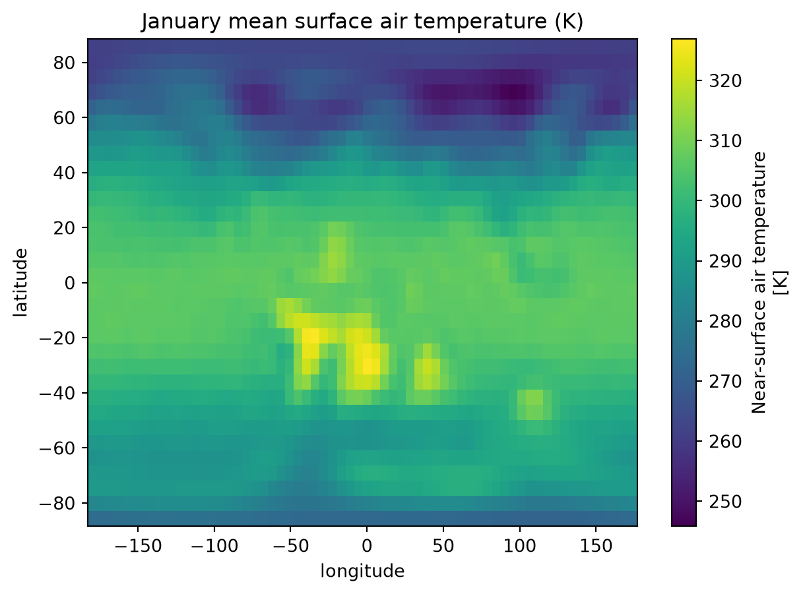

How did Earth’s past climate vary across geological time, and how can we reconstruct it from numerical model outputs?
What You Will Do
In this module, you will:
Load and inspect a NetCDF climate file using xarray
Understand the structure and metadata of NetCDF files
Convert raw model outputs to standard units
Classify every grid cell into a Köppen-Geiger climate zone
Fetch a land mask from palaeogeography and apply it to your map
Why This Matters
Climate models produce outputs in formats that are very different from the GeoTIFF rasters you have worked with so far. NetCDF is the standard format in climate and ocean sciences, and knowing how to read, inspect, and analyse these files is an essential skill for any geoscientist working with model data. Köppen-Geiger classification is a widely used framework to summarise complex climate information into a simple, interpretable map.
Your Tasks
Load the data: Open a NetCDF file for a chosen reconstruction age.
1.1. Inspect the dimensions, coordinates, and variables.
1.2. Read the variable attributes to understand units and provenance.
Explore the data: Select and print subsets of the data.
2.1. Extract temperature values for a single month.
2.2. Extract a time series for a specific location (e.g. Geneva).
Convert units: Transform raw model outputs into usable units.
3.1. Convert temperature from Kelvin to Celsius.
3.2. Convert precipitation from m s⁻¹ to mm/month.
Classify climate zones: Apply the Köppen-Geiger algorithm.
4.1. Compute temperature and precipitation derived quantities.
4.2. Write and apply the classification function grid cell by grid cell.
Mask and visualise: Fetch a land mask and plot the final map.
5.1. Request the palaeogeography layer from the PANALESIS GeoServer.
5.2. Resample the mask to match the climate grid resolution.
5.3. Apply the mask and plot the Köppen-Geiger map.
Skills You Will Gain
Reading and inspecting NetCDF files with xarray.
Understanding CF Conventions and variable metadata.
Performing unit conversions on multi-dimensional arrays.
Implementing a rule-based classification algorithm in Python.
Combining data from different sources and resolutions using resampling.
Fetching raster data from a WCS GeoServer endpoint.
Points for Discussion
What do you think is the role of palaeogeography for climate modelling of the past ?
What are the advantages of having NetCDF file formats versus GeoTiFF ?
Why aren’t NetCDF files more used in the traditional geospatial world? Why is GeoTiFF still dominant ?
How could the Köppen-Geiger maps be used to understand deep-time evolution of the Earth in future studies ?
Do you see risks and/or limitations about combining maps that have vers different resolutions ?
Step-by-step instructions
In the second part of the exercise, we extended our analysis on other maps beyond palaeogeography:
Defined functions to easily request a WCS for a given layer name and reconstruction age, and plot the map
Explored options to analyze the map, using rasterio.plot.show_hist or its mean value.
Optimized our analysis by using xarray and rioxarray to work efficiently with several GeoTiFF layers that share the same extent and resolution.
Performed operations to filter data between layers to keep only pixels of interest using numpy
Explored the relationship between the oceanic lithosphere and the seafloor age.
Extended our analysis to the entire Phanerozoic for continental and oceanic domains.
Exported our results in tabular format using pandas.
In this last part, we will have a look at another data format that is very common in the geosciences: NetCDF (abbreviation for Network Common Data Form). Unlike the GeoTiFF format that requires one file per map, a NetCDF is like a labelled can hold many variables (temperature, precipitation…) each with their own dimensions (space, time) and metadata, all in one file.
Feature
GeoTIFF
NetCDF
File extension
.tif
.nc
Typical use
Single raster layer (e.g. one image)
Multiple variables + time dimensions
Dimensions
2D (rows × cols)
N-dimensional (e.g. month × lat × lon)
Metadata
Limited
Rich, self-describing
Common in
Remote sensing, GIS
Climate science, oceanography
Python library
rasterio, rioxarray
xarray, netCDF4
We will learn how to read NetCDF files, understand their metadata, and turn input data related to precipitation and temperature into climate zones maps (Köppen-Geiger) for the entire Phanerozoic.
Install libraries
This tutorial requires the following libraries:
xarray
numpy
matplotlib
requests
rasterio
scipy
You can check if they are installed (and check which version you have) by running:
libs = ["xarray", "numpy", "matplotlib", "requests", "rasterio", "scipy"]for lib in libs:try: module =__import__(lib)print(lib +" is installed")exceptImportError:print(lib +" is NOT installed")
xarray is installed
numpy is installed
matplotlib is installed
requests is installed
rasterio is installed
scipy is installed
Let’s first load a file from the data/climate folder. We have one file per reconstruction age. The last 4 digits in the filename represents the age in millions of years (Ma), written to 4 digits style. For example, 0 Ma → 0000, 100 Ma → 0100, 444 Ma → 0444. By using a regular expression (regex) from the re library, selecting an age can be done like:
import xarray as xrimport numpy as npage =100nc_path =f"data/climate/panalesis_version_0_plasim-genie_tas_pr_{str(age).zfill(4)}Ma.nc"ds = xr.open_dataset( nc_path, engine="netcdf4")print(ds)
→ Have a look at the metadata: how is the data organized ? What is the resolution ?
→ Does this give you enough information about the data source ?
Inspect data
Every variable in a NetCDF file carries attributes: metadata describing what the variable is, its units, and more. This follows the CF Conventions standard. Let’s have a look at the air surface temperature variable:
print(ds["temperature_surface_air"].attrs)
{'standard_name': 'air_temperature', 'long_name': 'Near-surface air temperature', 'units': 'K'}
Thanks to the structure of the input data and how we read it using xarray, it is possible to access only selected slices of the entire dataset. For instance, we can select only one variable:
We can also select a single month, using .sel() which selects data by label (e.g. month=1):
temp_jan = temp.sel(month=1)print(temp_jan)
<xarray.DataArray 'temperature_surface_air' (latitude: 32, longitude: 64)> Size: 8kB
[2048 values with dtype=float32]
Coordinates:
* latitude (latitude) float32 128B 85.76 80.27 74.74 ... -80.27 -85.76
* longitude (longitude) float64 512B -180.0 -174.4 -168.8 ... 168.8 174.4
month int32 4B 1
Attributes:
standard_name: air_temperature
long_name: Near-surface air temperature
units: K
Or even a given location. For instance, if we take the approximate location of Geneva (lat/lon). The method="nearest" finds the grid cell with the centroid that is closest to your input coordinates:
→ Notice how the basic print returns the entire subset structure with the new dimensions and attributes. If you want to print the values, you need to specify it, but **be careful” to do this only when you have a small subset.
→ We asked for the Geneva location, but where is the closest pixel centroid point located ?
→ What were the temperatures 100 millions years ago at this location?
→ What does this tell you about the model resolution ?
Let’s now have a look at our data by plotting it, reusing the January subset we did before.
import matplotlib.pyplot as plttemp_jan.plot()plt.title("January mean surface air temperature (K)")plt.show()

Process into climate zones
As you noticed, the units for temperature are in Kelvin and precipitation are in meters per seconds. Before any analysis, we need to convert both variables to standard units, in our case this would be degrees Celsius and millimeters per month.
We now have everything we need to classify each grid cell into a climate zone.
For the classification we need to know how warm or cold each grid cell gets. The coldest and warmest month determine whether a climate is polar, temperate, or continental. The number of months above 10°C is a proxy for the growing season.
Precipitation seasonality is just as important as the total amount. A climate with dry summers behaves very differently from one with dry winters, even if the annual total is the same. We split the year into summer (Apr–Sep) and winter (Oct–Mar) halves to detect this seasonality.
Group B (arid) climates are defined by precipitation being too low relative to evaporation demand. Evaporation increases with temperature, so the threshold is not a fixed number but depends on the annual mean temperature. We will use a simplified version of the standard formula:
p_threshold =2* t_annual +28
The full Köppen formula adjusts p_threshold based on precipitation seasonality (adding 0 to 28 mm depending on whether rain falls in summer or winter). Here we use a fixed offset of +28 for simplicity.
Let’s write a function that takes the pre-computed quantities for a single grid cell and returns its 2-letter Köppen-Geiger code. The logic follows the standard hierarchical order: polar first, then arid, tropical, temperate and continental.
def classify_koppen(t_ann, t_mn, t_mx, p_ann, p_mn, p_sum, p_win, p_thr):# E: Polar (warmest month too cold for tree growth)if t_mx <0:return"EF"# ice capif t_mx <10:return"ET"# tundra# B: Arid (precipitation too low relative to evaporation)if p_ann < p_thr:if p_ann <0.5* p_thr:return"BW"# desertreturn"BS"# steppe# A: Tropical (coldest month still warm (>= 18°C))if t_mn >=18:if p_mn >=60:return"Af"# rainforestif p_mn >=100- p_ann /25:return"Am"# monsoonreturn"Aw"# savanna# C: Temperate (coldest month between -3°C and 18°C)if t_mn >-3:if p_sum >10* p_win:return"Cs"# dry summerif p_win >3* p_sum:return"Cw"# dry winterreturn"Cf"# no dry season# D: Continental (coldest month below -3°C)if p_sum >10* p_win:return"Ds"# dry summerif p_win >3* p_sum:return"Dw"# dry winterreturn"Df"# no dry season
We now loop over every grid cell and apply the function. This will give us a numpy array (2D) with the two-letters classes for each cell.
For clarity, here is a quick overview of the 13 climate zones we classify:
Code
Name
Key characteristics
Af
Tropical rainforest
No dry season, every month > 60 mm
Am
Tropical monsoon
Short dry season, high annual rainfall
Aw
Tropical savanna
Pronounced dry winter season
BS
Semi-arid steppe
Low rainfall, not quite desert
BW
Arid desert
Very low rainfall, hot or cold
Cf
Temperate, no dry season
Mild winters, rain year-round
Cs
Temperate, dry summer
Mediterranean-type climate
Cw
Temperate, dry winter
Mild winters, summer rains
Df
Continental, no dry season
Cold winters, rain year-round
Ds
Continental, dry summer
Cold winters, dry summers
Dw
Continental, dry winter
Very cold winters, summer rains
ET
Tundra
Warmest month between 0–10°C
EF
Ice cap
Warmest month below 0°C, permanent ice
The climate model runs over the full grid including ocean cells. To show only land areas in our Köppen-Geiger map, we will create a land mask directly from the PANALESIS GeoServer, as we used in the first two parts of this exercise.
The time convention is the same as before: geological age in Ma is added to the year 2000 (e.g. 100 Ma → 2100-01-01T00:00:00.000Z).
Our elevation data (from palaeogeography) has a resolution of 0.1°, which is much more higher resolution than the climate data (approx 5.6°). We need to resample it down using scipy.ndimage.zoom with order=0 (nearest neighbour) and keep a cell as land if more than 50% of the high-resolution pixels are land. This is an approximation but will give us an overview globally.
→ Does the land mask shape matches the climate data ?
→ What other method could we use to have mathing resolutions accross both maps?
Now that we have our land mask, we need to apply it to our Köppen-Geiger classes, by converting all pixels not on land as np.nan. This implies converting the original data type (integers) to float numbers, because integers cannot describe np.nan.
→ How could such a time-series be used in future studies to understand long-term evolution of the Earth surface ?
Final questions
What do you think is the role of palaeogeography for climate modelling of the past ?
What are the advantages of having NetCDF file formats versus GeoTiFF ?
Why aren’t NetCDF files more used in the traditional geospatial world? Why is GeoTiFF still dominant ?
How could the Köppen-Geiger maps be used to understand deep-time evolution of the Earth in future studies ?
Do you see risks and/or limitations about combining maps that have vers different resolutions ?
Links to useful libraries and tools
Python libraries
scipy A Python library for scientific computing, providing tools for statistics, optimization, interpolation, and signal processing built on top of numpy